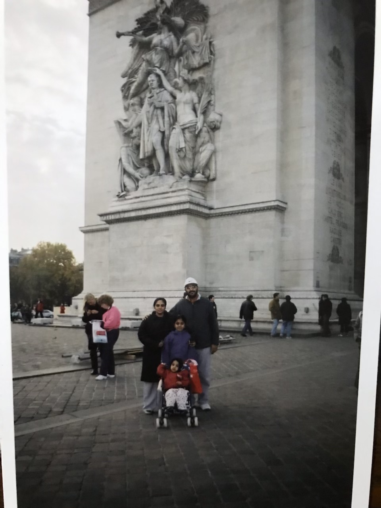
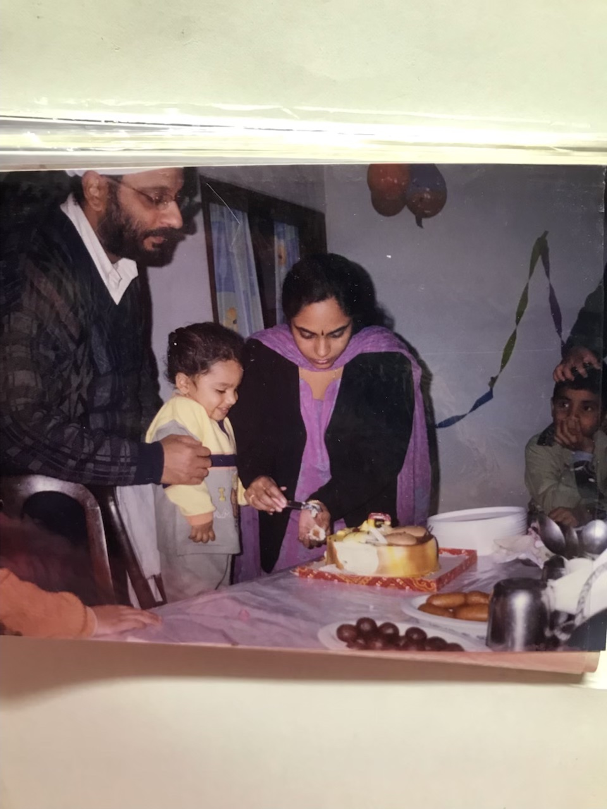

- 
- 
Life for Sahej began in the bustling city of New Delhi, India. Born on the 25th of January 2001, Sahej was born on one of the coldest days of the year. For the first year of life, Sahej mostly slept, often disappointing his siblings who were excited to play with the newest edition to the family. Even though he was born in New Delhi, his life's traveling adventure began very soon. At the age of 1 his family moved to Paris, France. The amazing thing is that he only started to form memories in Paris and that too his fondest memories. Like playing little games with his older sister who learned how to play little french games and would practice with her little brother so that she could be a pro for the next day in school Or the times when Sahej and his sister used to play with little race cars and play videogames together. Sahej also remembers his first time going to the Efile Tower and visiting Switzerland.